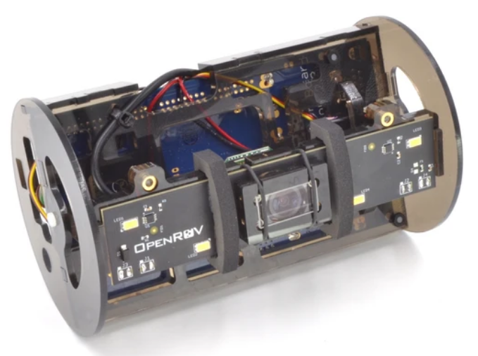

Estamos convencidos que el objetivo esencial del avance científico y las disciplinas están en satisfacer las necesidades materiales e intelectuales de la sociedad. Esto nos permitirá emplear los avances de la ciencia y la tecnología como vía para alcanzar el bienestar, la justicia social y el desarrollo sostenible. Los proyectos planteados dentro de la Colección Ciencia Abierta Lab MX están alineados con los principios europeos de la Carta de Berlín (Civic Epistemologies 2015), y a las políticas mexicanas en Ciencia Abierta (Consejo Nacional de Ciencia y Tecnología 2017) como el acceso total de la ciudadanía a la ciencia que buscan fomentar su apropiación social. Se basan en la propuesta ética y social del Manifiesto de la Ciencia Abierta según la Red de Ciencia Abierta y Colaborativa para el Desarrollo, por su siglas en inglés OCSDNET, en particular en sus Siete Principios.
